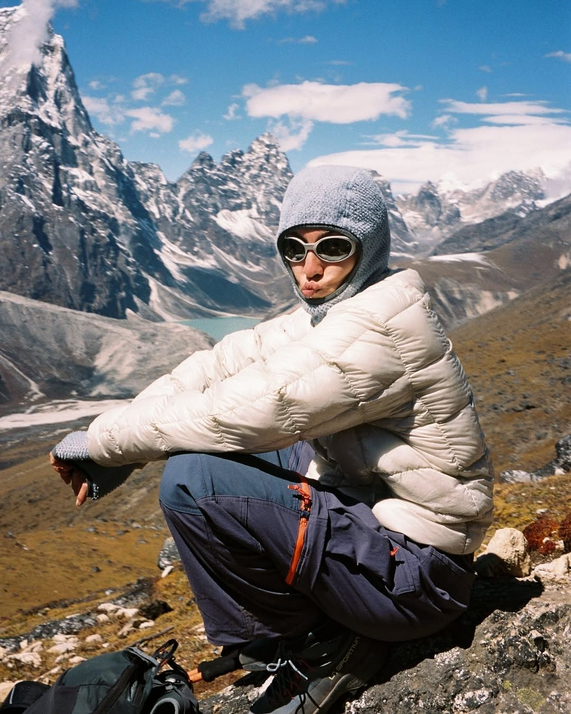

Gorpcore : la montagne qu'on ne gravira jamais
Des vestes conçues pour affronter des sommets, portées pour aller chercher un café. Le gorpcore a transformé l'équipement de montagne en uniforme urbain. Mais derrière cette mode se cachent des questions plus grandes qu'elle : notre rapport à la nature, au confort, et à un climat qui change sous nos yeux.

Quand la fonction devient esthétique
À l'origine, chaque détail avait un but : les coutures étanches, les sangles, les poches multiples, les couleurs vives pour être repéré de loin. Aujourd'hui, tout ça n'a plus rien à voir avec la montagne. Ce qui servait à survivre sert désormais à avoir l'air cool. La performance est devenue un langage visuel.
C'est le paradoxe amusant du mouvement : on s'habille pour une aventure qu'on ne vivra jamais. La veste prête à affronter une tempête ne verra que le métro, les chaussures taillées pour les rochers ne fouleront que le bitume. L'utile est devenu décoratif, et c'est précisément ce détournement qui séduit.
Il y a dans ce glissement quelque chose de très actuel. Nous aimons les objets qui promettent de pouvoir, même quand nous ne les utiliserons jamais pleinement. Posséder l'équipement d'un explorateur, c'est s'offrir un peu de son courage sans jamais prendre ses risques.
La ville comme terrain d'aventure
Le gorpcore raconte quelque chose de notre époque : un besoin d'évasion dans un monde ultra-urbain. On ne part pas à la montagne, alors on la porte sur soi. Le vêtement devient un fantasme de nature, un bout de grand air dans une vie de béton.
Ce n'est pas un hasard si cette mode explose dans les plus grandes métropoles. Plus on vit loin de la nature, plus on la convoite. Le citadin se rêve aventurier le temps d'un trajet, et le vêtement technique lui vend ce rêve clé en main, sans boue ni effort. La montagne devient une idée qu'on enfile plutôt qu'un lieu qu'on affronte.
L'ombre du climat
Il y a quelque chose de troublant à vouloir ressembler à un explorateur à l'heure où la nature, elle, recule. Le gorpcore prospère dans une époque d'angoisse climatique, et il n'est pas insensé d'y voir une forme de réponse inconsciente : s'équiper comme pour affronter un monde devenu hostile, se parer de vêtements qui promettent de nous protéger de tout.
Certains y voient même une esthétique de la survie, un imaginaire de préparation au pire, comme si l'on anticipait déjà des temps plus durs. La veste imperméable devient une armure symbolique contre un avenir incertain. Ce n'est plus seulement une mode, c'est un état d'esprit.
Et pourtant, le paradoxe est vertigineux. Ces marques vantent la nature, le grand air, la durabilité — mais participent aussi à la surconsommation qu'elles prétendent fuir. Le gorpcore célèbre la planète tout en nourrissant ce qui l'abîme. Acheter une veste conçue pour durer trente ans et en changer chaque saison par effet de mode, c'est trahir l'idée même qu'on achète.
Les marques techniques au sommet
Des noms autrefois réservés aux randonneurs se retrouvent sur les plus beaux fits des villes. Le logo de montagne est devenu un signe de bon goût. Ce qu'on trouvait dans les magasins de sport trône désormais à côté du luxe.
Pour ces marques, c'est une consécration inattendue. Conçues pour la performance, elles découvrent une seconde vie dans la mode, portées par des gens qui n'escaladeront jamais rien. Un virage étrange, mais lucratif, qui les force parfois à choisir entre leur âme technique et leur nouveau statut d'objet de désir.
Une mode sincère malgré ses contradictions
Malgré tout, le gorpcore séduit parce qu'il repose sur une vérité : des vêtements pensés pour durer, pour servir, pour protéger. Face à la fast fashion jetable, choisir du solide reste un geste qui a du sens.
Reste à savoir ce qu'on en fait. Porté par conviction, le gorpcore est une petite résistance à l'obsolescence. Porté par pur effet de mode, il n'est qu'un excès de plus. Comme souvent, ce n'est pas le vêtement qui décide de son sens, mais la main qui l'enfile. Et c'est peut-être ça, la vraie leçon : le même manteau peut être un caprice ou un engagement, selon ce qu'on en attend.
On s'équipe pour une montagne qu'on ne gravira jamais. Mais ce qu'on cherche, au fond, c'est de se sentir prêt à tout.